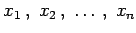

Inhalt Index DeskTop Bronstein

 Numerische Mathematik Numerische Lösung von Gleichungssystemen
Numerische Mathematik Numerische Lösung von Gleichungssystemen


Das System der n nichtlinearen Gleichungen
für die n Unbekannten  habe eine Lösung. Diese kann in der Regel nur numerisch mit Hilfe von Iterationsverfahren bestimmt werden.